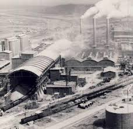
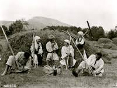
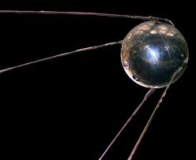

Industrializarea

Primul Război Mondial și războiul civil rus au avut un efect devastator asupra economiei țării. Producția industrială în 1922 era doar 13% din cea a anului 1914. Sub conducerea lui Stalin, Noua Politică Economică , care permitea o libertate limitată a pieței în contextul economiei socialiste, a fost înlocuită cu un plan cincinal hotărât de la centru, la sfârșitul celui de-al treilea deceniu. Acesta presupunea un program extrem de ambițios de industrializare forțată, ghidată de stat, și de colectivizare a agriculturii. În ciuda poticnelilor și greșelilor de început, primele două planuri cincinale au dus la o rapidă industrializare, pornind de la o bază economică foarte scăzută. Uniunea Sovietică, catalogată în general ca cea mai săracă națiune din Europa în 1922, se industrializa acum într-un ritm fenomenal, depășind de departe viteza industrializării Germaniei din secolul al XIX-lea și al Japoniei din secolul al XX-lea.
Fără capital de investiție, cu un comerț exterior nesemnificativ și fără nici o industrie modernă ca sprijin, guvernul lui Stalin a finanțat industrializarea atât prin restrângerea consumului unei părți a cetățenilor sovietici (pentru asigurarea capitalului reinvestit în industrie), cât și prin spolierea fără milă a bogăției țărănimii. Nu în puține cazuri, munca industrială era cu bună știință plătită sub valoarea ei reală. Era, în primul rând, cazul muncii aproape gratuite a prizonierilor din lagărele de muncă. Iar în al doilea rând, erau frecventele "mobilizări" ale comuniștilor și ale membrilor de Komsomol pentru diferite proiecte de construcție.
Colectivizarea

Regimul lui Stalin a colectivizat agricultura. Teoria care justifica colectivizarea era aceea că se vor înlocui fermele mici, nemecanizate și ineficiente cu ferme puternic mecanizate, care vor produce recolte cu mult mai multă eficiență. Colectivizarea a însemnat schimbări sociale dramatice, de o amploare nemaivăzută de la abolirea iobăgiei din 1861 și alienarea țărănimii față de controlul asupra pământului și a producției agricole. Colectivizarea a însemnat și o cădere dramatică a standardului de viață a numeroși țărani (dar nu a tuturor, cei mai săraci țărani au simțit o creștere a nivelului de trai). Colectivizarea a avut de înfruntat o rezistență generală și adeseori violentă a țărănimii.
În primii ani de colectivizare, producția agricolă a scăzut, de fapt. Stalin a acuzat de această scădere neașteptată pe culaci, chiaburi, care se opuneau colectivizării. De aceea, cei catalogați drept "culaci", "ajutoare ale culacilor" și mai târziu "foști culaci", erau unii împușcați, alții trimiși în Gulag – lagăre de muncă sau erau deportați în zone îndepărtate ale țării, fără a exista o regulă în această privință.
Desfășurarea în două etape a colectivizării, întreruptă un timp de un an de faimosul editorial al lui Stalin "Amețiți de succes" (Pravda, 30 martie 1930), este un exemplu perfect al abilității sale de a aplica retrageri tactice.
Mulți istorici sunt de acord că distrugerile provocate de colectivizarea forțată au fost responsabile de foametea teribilă care a cauzat moartea a până la 5 milioane de oameni, între anii 1932-33, în mod special în Ucraina și în regiunea inferioară a fluviului Volga.
Știința
Știința în Uniunea Sovietică era sub strictul control ideologic al partidului, alături de artă, literatură și orice altceva. Partea pozitivă a fost aceea a unui progres semnificativ în domeniile "sigure din punct de vedere ideologic", datorită sistemului de educație și învățământ gratuit și al cercetării științifice finanțate de stat. Totuși, în câteva cazuri, consecințele presiunii ideologice au fost dramatice, exemplele cele mai cunoscute fiind acele ale "pseudo-științelor burgheze": genetica și cibernetica.
Lingvistica a fost singurul domeniu al științei sovietice la care Stalin a contribuit direct și personal. La începutul guvernării staliniste, figura dominantă în lingvistica sovietică era Nicolai Iakovlevici Marr, care afirma că limba este o construcție de clasă și că structura limbii este determinată de structura economică a societății. Stalin, care scrisese mai înainte despre politica limbii, dată fiind funcția lui de Comisar al Poporului pentru Naționalități, a simțit că stăpânea suficient problemele de bază ca să se opună în mod coerent acestui formalism marxist simplist, sfârșind dominația ideologică a lui Marr asupra lingvisticii sovietice. Principala lucrare a lui Stalin în domeniul lingvisticii a fost un mic eseu numit Marxismul și problemele lingvisticii . Deși nu a adus o mare contribuție teoretică sau practică, nu sunt erori aparente în modul în care Stalin înțelegea lingvistica și influența sa a eliberat, în mod sigur, această știință de teoriile orientate ideologic care dominau genetica, de exemplu.

Cercetarea științifică în aproape toate domeniile a fost stânjenită de faptul că mulți oameni de știință au fost trimiși în lagăre de muncă (printre alții Lev Landau, un câștigător de mai târziu al Premiului Nobel, care a petrecut un an în închisoare, în 1938-1939), sau au fost executați (precum Lev Șubnikov, care a fost împușcat în 1937). Ei au fost persecutați pentru disidențe (reale sau imaginare) sau, cel mai adesea, pentru cercetări "incorecte din punct de vedere politic".
Totuși, s-au făcut progrese în anumite domenii ale științei și tehnologiei pe timpul lui Stalin, precum dezvoltarea computerului BESM-1, în 1953, și lansarea, la 4 ani după moartea sa, a satelitului Sputnik în 1957. În mod real, mulți politicieni din Statele Unite începuseră să se teamă după "Criza Sputnik" că țara lor a fost eclipsată de către Uniunea Sovietică în știință și învățământul public.